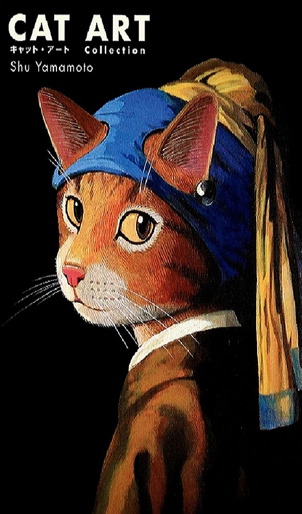
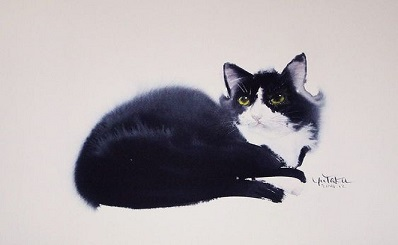
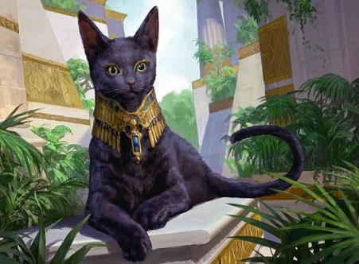

Богини и охотницы
Предшественники милых барсиков и мурок не были столь милы и приветливы. Один из храмов Гелиополиса украшала скульптура кошки — бог Ра в обличии хищного зверя. В зависимости от времени суток глаза статуи сужались или расширялись (жрецы умело пользовались достижениями новейших технологий того времени), а изо рта священного животного каждый час струилась вода. Их каменные изваяния неотступно следовали за фараонами в загробный мир и там охраняли… правда, главная их охранная миссия заключалась в истреблении грызунов, мастерски уничтожавших зерновые припасы. Благодаря природной ловкости умелые охотницы были возвышены до ранга богов, следовательно, изображения их имели магическую силу.
В Древнем Египте кошки были всюду: их ваяли из камня, рисовали на посуде и на стенах погребальных камер, лепили из глины… На берегах Нила они были священны, а за убийство зверька даже полагалась смертная кара. Усатых помощниц верховного божества мумифицировали и хоронили на специальных кладбищах.

В Древнем Египте кошки
были всюду: их ваяли
из камня, рисовали
на посуде и на стенах
погребальных камер,
лепили из глины…
На берегах Нила они
были священны, а за
убийство зверька даже
полагалась смертная кара.
Усатых помощниц верховного
божества мумифицировали
Чуть позже, кошка попала в пантеон германцев и служила богине Фрее:
в повозку богини были запряжены две кошки.
Пожалуй, на этом ее возвышение завершилось.
В римской и греческой живописи изображение кошки встречается на монетах, амфорах, красивых мозаиках и т. д. Но это далеко не «цари зверей», а лишь союзники в борьбе с грызунами.
